Actualmente cualquier persona tiene acceso a internet y puede disfrutar de todos los servicios que ofrece, como pueden ser redes sociales, juegos online, etc. El internet convencional —todo aquello que está en la red y que podemos encontrar mediante un buscador habitual como Google, Bing o Yahoo!— lo podemos denominar como Clearnet.
Pero no todo lo que queremos encontrar está albergado en internet accesible. Aquí es donde aparece el término de Deep Web, que se refiere a todo aquello que no podemos encontrar buscando desde un buscador normal y que requiere de herramientas y conocimientos específicos para acceder.
La Red Tor
La red Tor o "The Onion Router" es un proyecto que comenzó en 2002 y que tiene como objetivo crear una red donde el usuario sea totalmente anónimo y seguro, es decir, que su dirección IP esté oculta y no la puedan ver otros usuarios.
Esta red se caracteriza porque tiene distintos tipos de usuarios:
- Usuarios de la red.
- Usuarios que encaminan el tráfico de la red.
- Usuarios que hacen de servicio de directorios.
El objetivo principal de esta red es que el usuario navegue sin posibilidad de ser rastreado, o al menos que sea lo más difícil posible. Gracias a esta red, muchos usuarios que viven en países donde la navegación por internet está controlada pueden acceder o transmitir información evadiendo a las autoridades de su país.
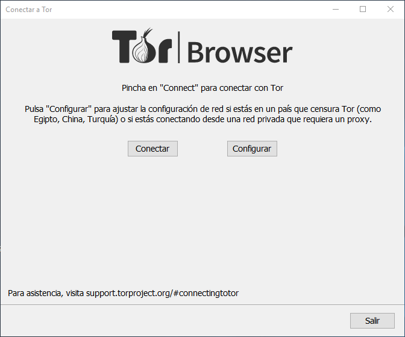
El Onion Router, a pesar de tener un enrutado anónimo, no significa que nadie pueda ver tu información. La red funciona de manera que toda la información se cifra en la entrada (usuario) y se descifra en la salida (servidor web). Si un usuario posee un router de salida, aunque no sepa quién es el emisor, puede ver toda la información. Esta es una de las mayores debilidades de la Red Tor.
El enrutado funciona pasando por distintos nodos, de los cuales se obtiene la clave pública de todos, cifrando la información de manera que hay que descifrar todos los puntos anteriores para llegar a la información final. Esto hace un cifrado por capas, de ahí que se denomine Onion (cebolla).
Darkweb, Deep Web y Darknet
Los usuarios de internet muchas veces confunden estos tres términos:
- Deep Web: todo aquello que el usuario no puede ver con un buscador normal, pero que puede ser legal.
- Darkweb: todo aquello ilegal que encontramos en la Deep Web, y que además requiere un navegador específico para acceder.
- Darknet: una red propia en la que únicamente entra aquel usuario al que se le dé acceso o que tenga unas credenciales.
¿Cómo acceder a la Red Tor?
Para acceder a la Red Tor no podemos usar cualquier navegador, sino que hay que usar uno específico. Hay distintos navegadores como Whonix, Invisible Internet Project o Tor Browser. En este caso vamos a utilizar Tor Browser:
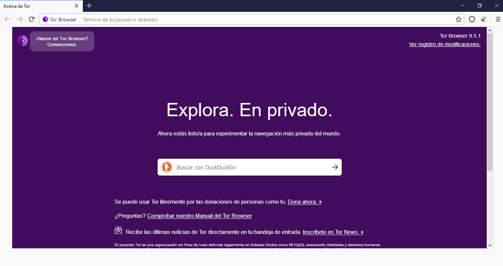
Lo primero es ir a torproject.org y descargarnos el navegador. Una vez descargado lo instalamos y a continuación podemos configurarlo o directamente conectarnos.
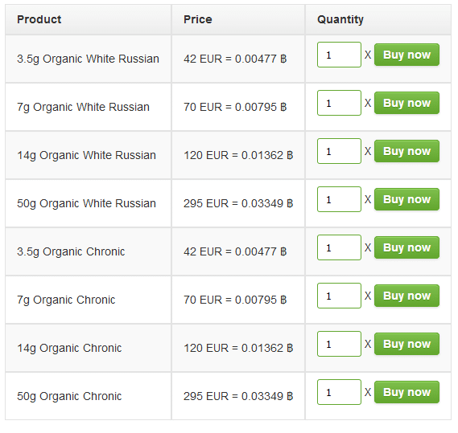
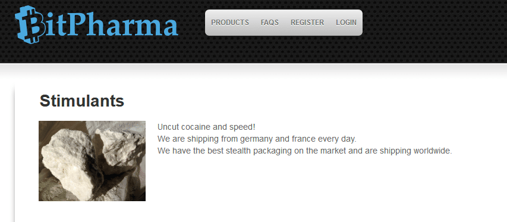
Ejemplos de lo que podemos encontrar
Después de haber explicado todo lo necesario, vamos a ver algunos ejemplos de lo que se puede encontrar en la Deep Web (con fines puramente informativos y educativos):
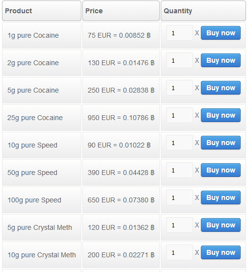
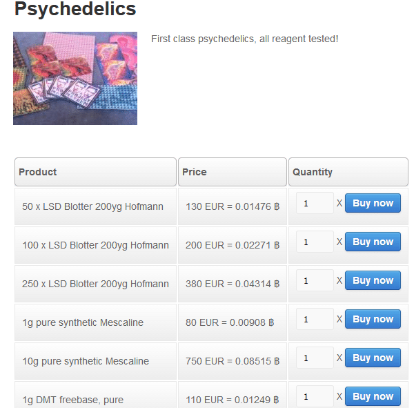
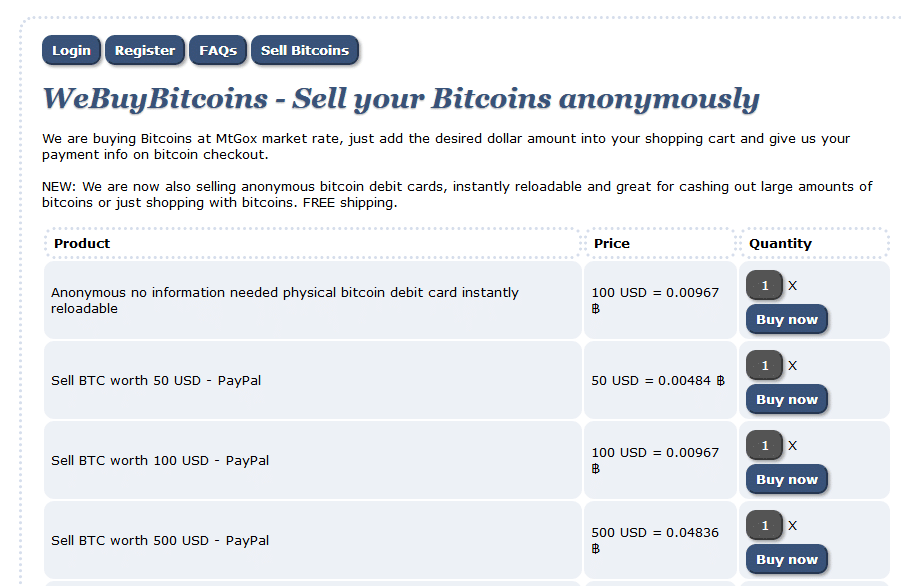
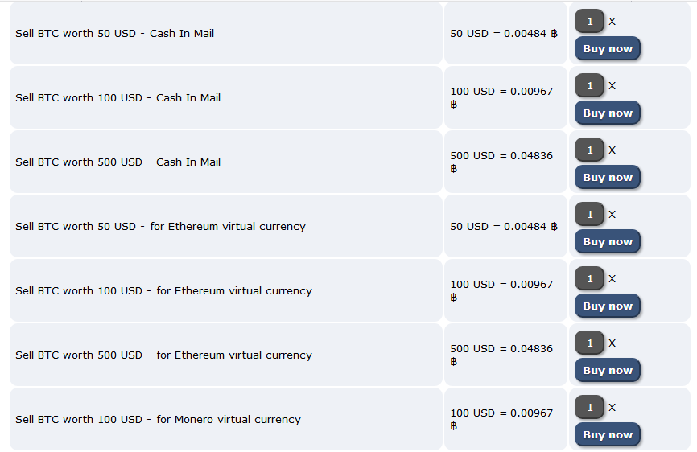
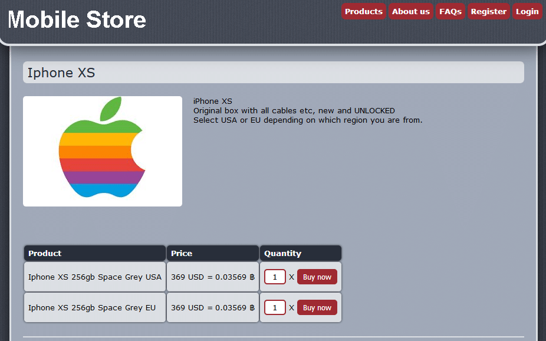
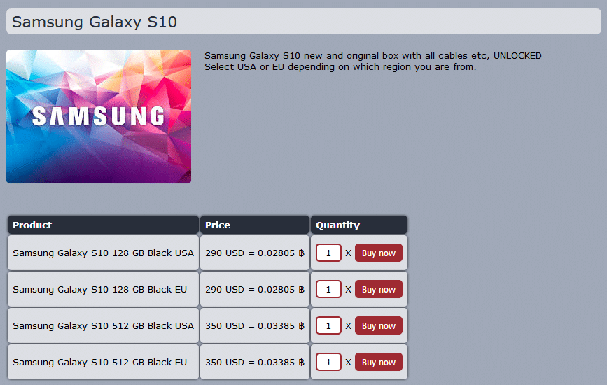
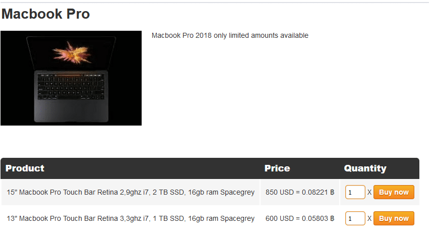
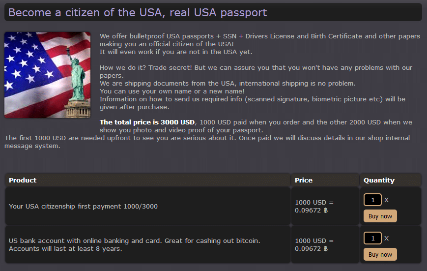
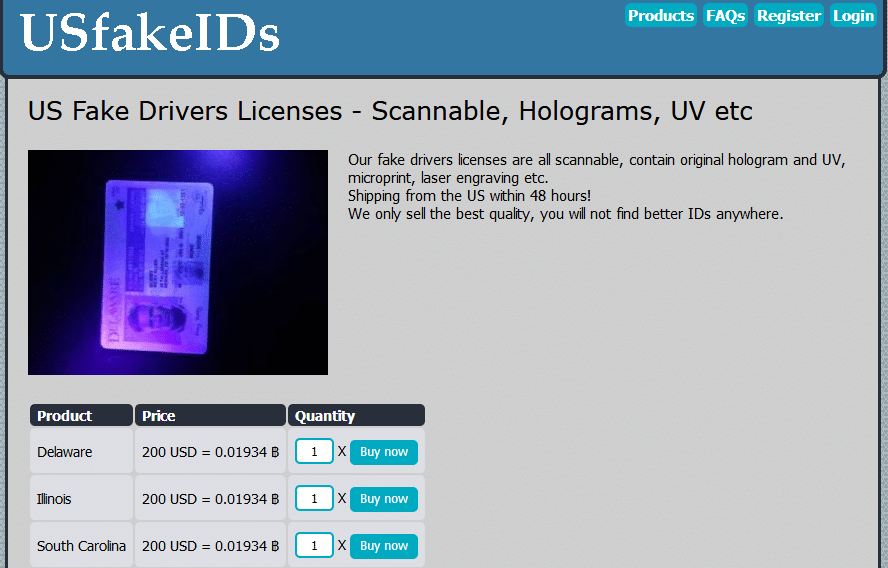
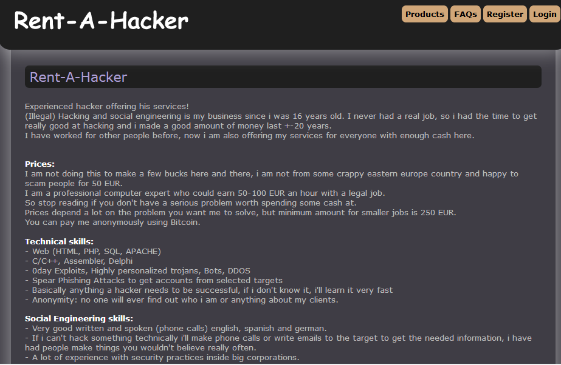
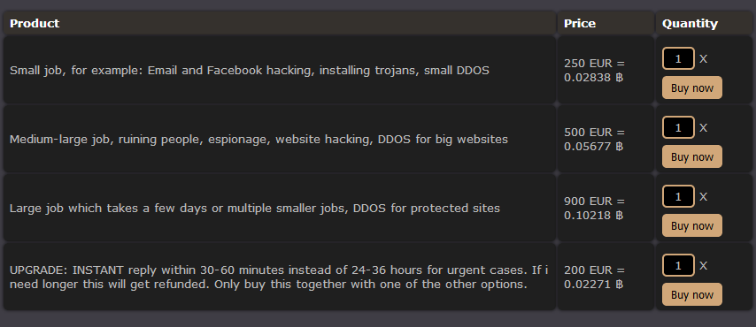